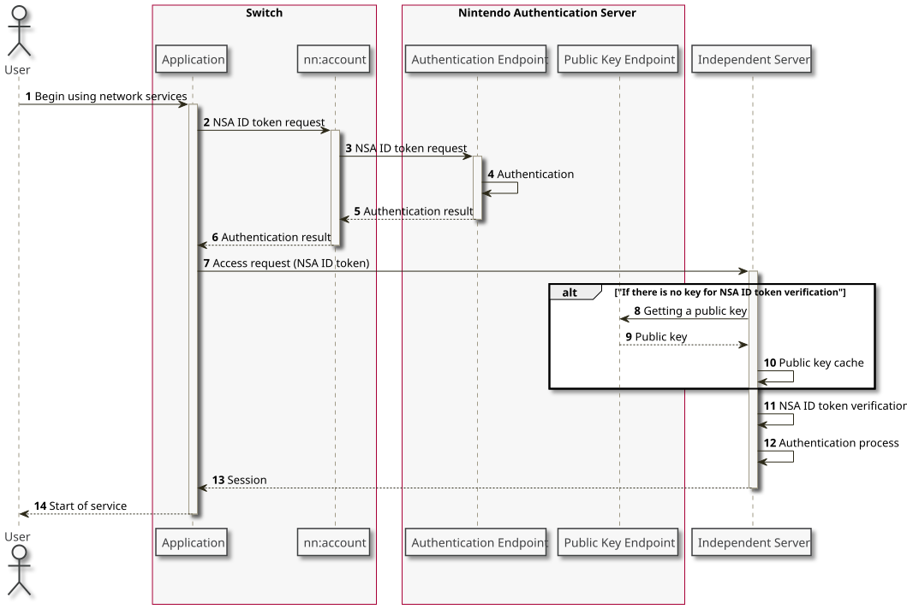

The following sample shows the standard sequence up to the point of logging in to the independent server by an application using an NSA ID token.

| Number | Description |
|---|---|
| 1-2 |
When the application connects to the independent server it allocates cache for the NSA ID token and gets that cache. Have the application call the |
| 3-6 |
The server authenticates the device, application, and network service account. If they pass authentication, If authentication or communication fails and an NSA ID token cannot be obtained, the function returns failure. |
| 7 |
The application sends the obtained NSA ID token to the independent server. There are no restrictions on how tokens are sent, but the communication route must be encrypted to prevent interception of NSA ID tokens. |
| 8-11 |
The NSA ID token received by the independent server is verified using the procedure described later. |
| 12-14 |
If the verification result confirms that the NSA ID token is valid, services may be provided for the application. If necessary, the services are associated with the network service account. |
CONFIDENTIAL